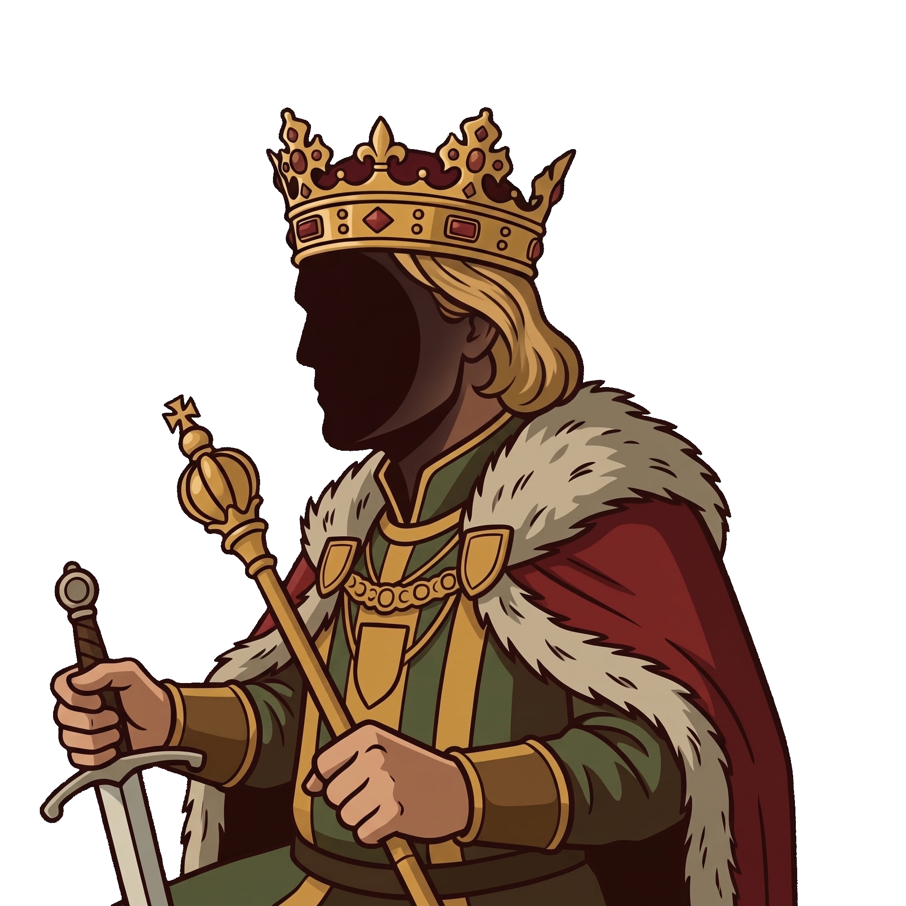
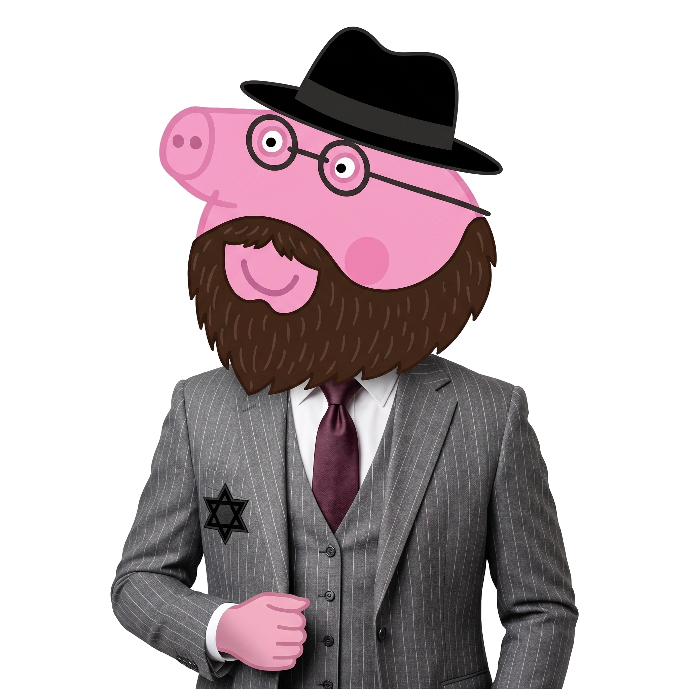
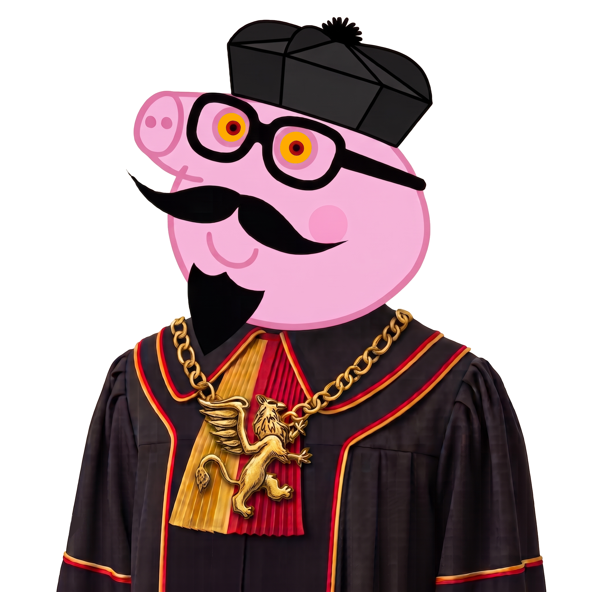
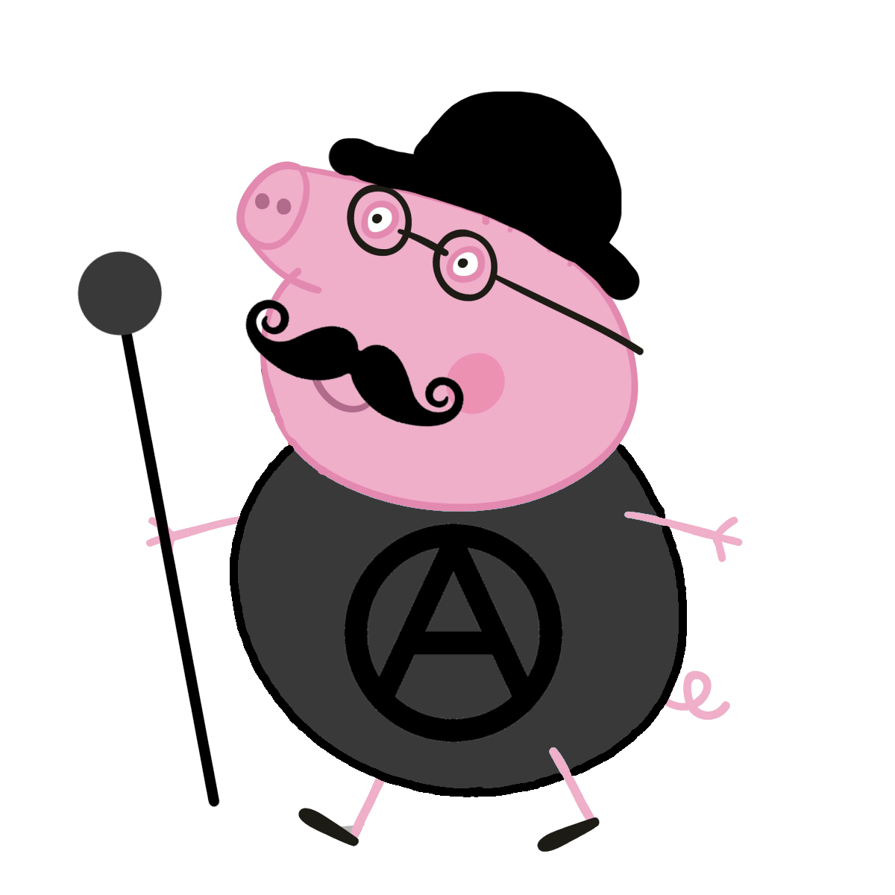
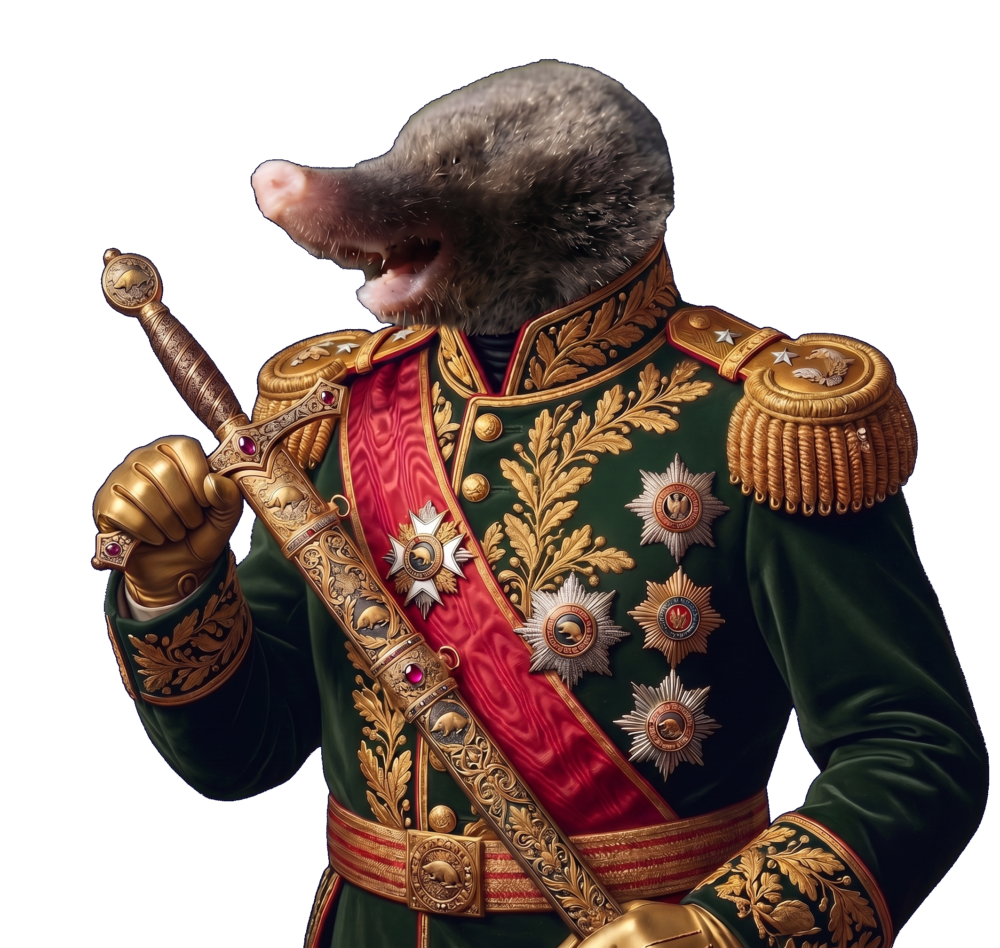
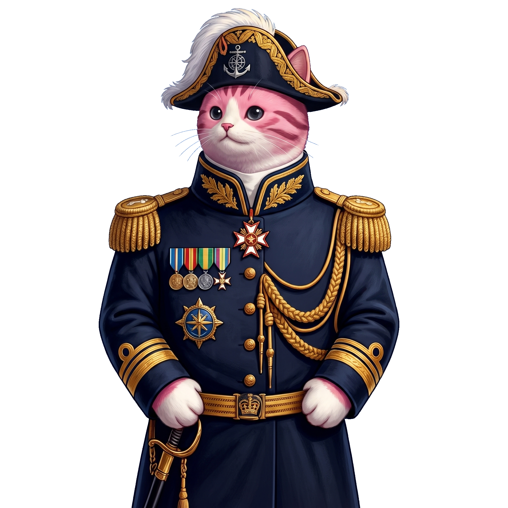
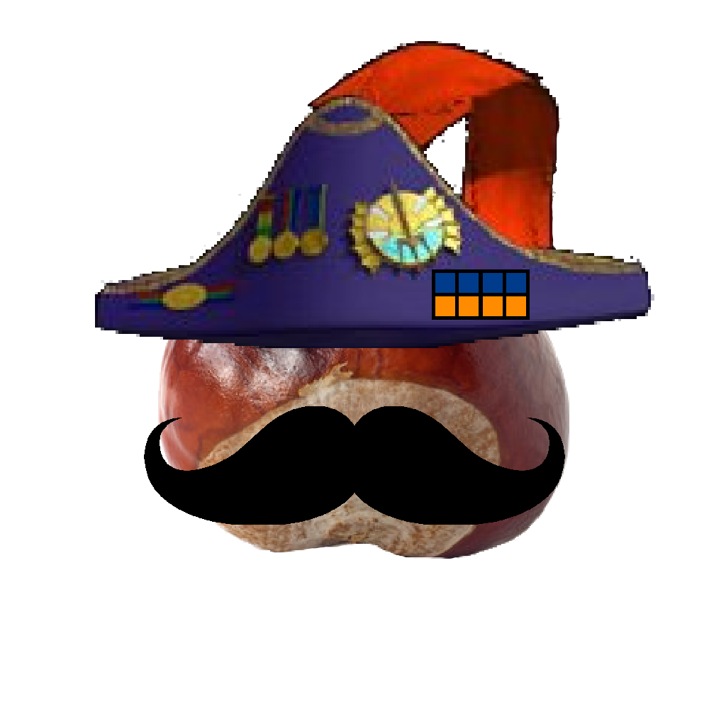
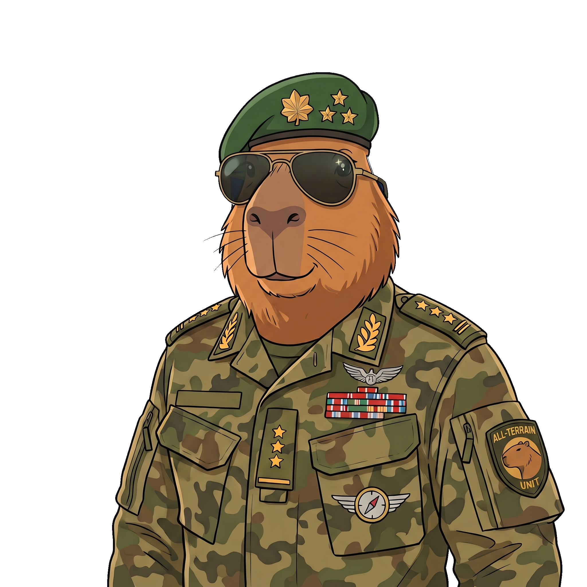

Rząd Koronny
Rząd Koronny kieruje polityką wewnętrzną i zewnętrzną państwa, zarządza administracją koronną oraz koordynuje pracami poszczególnych resortów w celu realizacji porządku prawnego i naturalnego.

Krul Artur I Gryfion
Przewodniczący Rządu Koronnego

Wielki Diuk Demokratyczny Tata Świnka
Wiceprzewodniczący Rządu Koronnego i Minister Spraw Wewnętrznych i Bezpieczeństwa Państwa

Baron Benedykt Artrupovic
Minister Finansów
Baron Archadius Błękitny Smok
Minister Spraw Zagranicznych
Loki 3.2
Minister Edukacji i Nauki

Baron Żydowski Tata Świnka
Minister Gospodarki
Kunegunda Piastowska
Minister Regionów

Ludowo-socjalistyczny Wujek Świnka
Minister Pracy i Rodziny

Diuk Bolszewicki Tata Świnka
Minister Sprawiedliwości

Anarchistyczny Tata Świnka
Minister Spraw Religijnych
Jogobol
Minister Zdrowia
Zbysław Garncarski
Minister Rolnictwa

Generał Kretor
Minister Wojsk Lądowych

Admirał Książe Sukcesor Młotek Gryfion
Minister Krulewskiej Armady
Generał Athaurion
Minister Sił Powietrznych i Obrony Przestrzeni
Generał Papirz
Minister Koronnych Wojsk Specjalnych

Admirał Ekspansji Kasztanov
Minister Współpracy Wojskowej i Stabilizacji

Generał Książe Sukcesor Kapibariusz Gryfion
Minister Logistyki i Uzbrojenia Korony